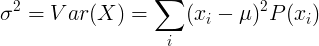

Variance
In probability and statistics, the variance of a random variable is the average value of the square distance from the mean value. It represents the how the random variable is distributed near the mean value. Small variance indicates that the random variable is distributed near the mean value. Big variance indicates that the random variable is distributed far from the mean value. For example, with normal distribution, narrow bell curve will have small variance and wide bell curve will have big variance.
Variance definition
The variance of random variable X is the expected value of squares of difference of X and the expected value μ.
σ2 = Var ( X ) = E [(X - μ)2]
From the definition of the variance we can get
σ2 = Var ( X ) = E(X 2) - μ2
Variance of continuous random variable
For continuous random variable with mean value μ and probability density function f(x):

or
![Var(X)=\left [ \int_{-\infty }^{\infty }x^2\: f(x)dx \right ]-\mu^2](variance/cont_var2.gif)
Variance of discrete random variable
For discrete random variable X with mean value μ and probability mass function P(x):

or
![Var(X)=\left [ \sum_{i}^{}x_i^2P(x_i) \right ]-\mu^2](variance/disc_var2.gif)
Properties of variance
When X and Y are independent random variables:
Var(X+Y) = Var(X) + Var(Y)
See also
PROBABILITY & STATISTICS
- Basic probability
- Expectation
- Variance
- Standard deviation
- Probability distribution
- Normal distribution
- Statistics symbols